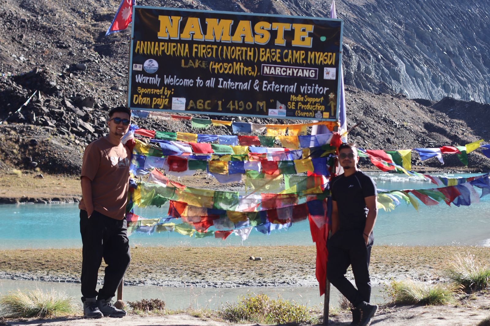

There is a route that not many people have travelled besides the crowded tracks of the traditional Annapurna Circuit and that is the North Annapurna Base Camp (North ABC) road. This northern route has never been travelled and is untamed, crude and deeply religious, previously used by the early mountaineering expeditioners on their way to the 10 th highest mountain in the world the Annapurna I (8,091m) and the 1 st -ever 8,000 metre peak ever to be succumbed to.
This path is a contrast to the southern trail full of teahouses, Wi-Fi, and chatters of the trekkers, which is why it is silent, lonely, and a challenge. We have no comfort zones at all: there are only steep slopes, primeval woods, and the sound of your own breath reverberating in deep Himalayan valleys.
It is five days that changed us, the journey up one of the least-travelled trails in Nepal, the mountains not only showing their beauty but showing us to ourselves.
Day 1: A Rolling Start / Biratnagar to Pokhara.
We did start out our adventure with a pair of hiking shoes, but with a bus ticket. We caught a night bus at Biratnagar at 4: 00 PM, under the graying autumn light, and we were off the plains and the urban throb of the east. It was a long, long road, the light of the headlights, the sound of the horns, the smell of dust and diesel and the food stalls along the road. Sleep was in snatches and the bus wound its way up and down the hills, rocked by the ancient Nepali songs of the driver and the rhythmic movement of the road.
At 8: 00 AM sixteen hours later, the bus arrived in Pokhara, the air clear and the mountains shining in the sunshine. Our weariness was dissolving in a sudden burst of sighting Machhapuchhre (Fishtail Mountain), upon which we had raised ourselves so loftily, as to be like a protector over what was before us.
Day 2 : Into the Highlands A Pokhara to Sandikharka.
Pokhara was cold and sunny in the morning. Then, after breakfast, we set off on our long journey, to Beni, and by winding roads that turned round rivers and cut through fertile valleys. On our way two girl trekkers who, later turned to good friends like sisters , were on their way to the North Annapurna route. Since then, our roads have crossed each other--and their presence gave a refreshing dose of vitality and fun to the company.
We went on at Beni by local jeep to Tatopani, and there changed to a bumpy pickup heading to Humkhola, the last motorable point before the expedition had commenced. The road was little more than a cut-out unearth road above Beni, sharp precipices on the one side, a foaming river on the other. Each twist and turn gave our hearts a quickening, but the thrill of coming into actual wildness conquered all uneasiness.
The Trails Begins
The last remnant of mobile network faded away at Humkhola, We called our families texted our loved ones & At 4:00 PM, we strapped our backpacks, laced our shoelaces and started walking. It was a difficult path up through the woods with rhododendron and oaks. At the approach of dusk mist had collected round us. The silence was unreal, not a horn, not a word was said, and only the beat of our heels.
Two hours of consistent climbing brought us to Sandikharka (2,400m) - a small village between two mountainous hills. The location only had one store which also doubled as a lodge, a place to eat meals and to have a rest. Its wooden architecture was lowly rising before the slopes, where the tea and shelter were given to the few travellers that passed.
We had a small room that night, and with us were three more trekkers, of whom we had nothing in common, and on whom the common trail united us. The bed was a mere plank, the air was very chilly and the sleep was restless. Yet behind the pain was a silent satisfaction-- the satisfaction that can only be experienced by being very distant of all things familiar.
Day 3: Over Forests, Falls and the Sacred Stillness.
Morning at Sandikharka came in a light, pale and golden filtration of the fog. Having had a light breakfast and a cup of hot tea, we went on with our walk back to Pancha Kunda, which is a sacred lake that the people of the area believe that the spirits of the Himalayas have blessed.
The path brought us further down into pure wildland. Great moss-covered trees grew above us, and their branches created a natural roof which filtered low beams of sunlight. The damp aroma of moist soil, the voice of the birds in the distance, and the incessant murmuring stream of water made the forest floor a living thing.
Gufa Phat :Gufa Phat The Hidden Rest Stop.
After a couple of hours of hiking, we arrived at Gufa Phat that means "Cave on the Flat" . It was a very peaceful spot, as the name implies, a small clearing before a rocky shelf which was the refuge of the locals in bad weather. We had coffee and emptied our bottles of fresh stream water and started again.
There was great quiet there--there was no sound, just a murmuring of the leaves and a cool breeze that swept through the woods.
Bhusket Mela -Where the River Whispers.
At eleven, we reached Bhusket Mela, a breathtaking valley that was full of icy streams, red- waterfall, and wild flowers, and was an image of pure calm. Bhusket was named thus by a local dialect, which signifies a water course, and lived as much as possible to this name, rivers falling down of unseen heights, to sparkling pools of glacial perfection.
There we took off our boots and dipped our legs in the cold flowing water. The coldness of the current was deadening and thrilling,--as though the mountains were smiling us to welcome. It was such a time that required but silence and thankfulness.
🧗\♂️ The Last Climb to Pancha Kunda.
The path became more difficult and steep at Bhusket Mela. It took hours, hours of climbing and pauses to have a breath and look about. Soon a heavy fog settled down around us and reduced the world to a matter of meters.
Towards evening we came to Pancha Kunda (some 4,190m) - a great, fog-filled bowl in which a lake was staring faintly through the fog. The fog was mirrored on the surfaces of them, making them look almost alienly calm.
That evening we pitched our tents by the lake. Mr. Sarup was, unfortunately, a little ill, and we had the honor to be assigned a separate tent, two-person tent, by way of giving him the rest he needed. The fog had settled down about our camp, suppressing all sound. In that silence we fell into profound sleep, and had the sense of being dwarfed and sheltered by the great Himalayan sky.
Day 4: Goodbye Sacred — Descent and Return.
In the morning the mountains displayed all their greatness. The lifting mist revealed the rising heights of the Annapurna I, Nilgiri and Tilicho Peak smoldering in gold. So amazing had been the sight of those giants in the calm lake of Pancha Kunda, that we stood motionless with hardly courage to stir.
The fog came back in a few minutes later--so it were as though the mountains had told their secret and recovered it. It was time to descend.
At 8:00 AM we loaded and started the trip down. The two girls we had met on the first day stayed a long time with us separated, to follow on a different path.
At 9:30 AM, we returned to Bhusket Mela had some lunch and after all the fatigue and sore legs due to the long and steep downhill and at 2:30 PM, we arrived at Humkhola, where we paused to take some lunch , Called the ones whom who last last called at reaching to hunkhola on First day to trek , Checked message and got flattered seeing the person Whom we thought during the journey was there everywhere & ended the journey with a big smile on the face, The ride was more rapid and not less difficult-- our legs were sore, but our heads were calm.
At Humkhola, a rough jeep transported us back to Pokhara where we reached at 9:00 PM. We were assisted by our friend Mr. Aayush Batajoo to get a place to stay. Hot shower, hot food, and a proper bed were luxuries beyond description after days in the wild.
☕ Day 5: Coffee, Chats, and Coming Home.
The next day we woke up late, about 10:00 AM and we were thankful and refreshed. We saw Mr. Batajoo after lunch and had a coffee and a chat with him. It is through him that we got to know people of DPL Pokhara, a group of friendly, enthusiastic people who treated us like members of their families.
By 3:00 PM, it was time to return. The 4:00 PM bus took us to Biratnagar, the same road which had brought us to adventure so many years before, bringing us back to Kohima, in good spirits and refreshed hearts.
Reflections What the Mountains Gave Us.
A Trail into Stillness : The trek to the North Annapurna Base Camp is not a conventional Himalayan. It is distant, strenuous and terribly self-examining. It divests the noises out of it — until no more.
Nature as the Teacher : All the waterfalls, fogs, lakes contained their own lesson - to slow, to listen, to breathe in, to give up.
Connection Over Comfort: Without Wi-Fi, and other modern convenience, we discovered the stronger connections with people we had never seen, with the land, and with ourselves.
Transformation in Motion The mountains not only challenged us, but transformed us. We came back lightly, more silent and down to earth. The adventure taught us that it is not about reaching a peak that makes one an adventure, but rather about finding the soul on the way.
Tips: Go with friends or a guide, allow flexible days, and respect local culture and environment by minimizing waste.
This trek was more than a physical challenge. It was about friendship, perseverance, and discovery. The journey tested us, but standing before Annapurna I reminded us that while treks may end, the spirit of adventure never does.